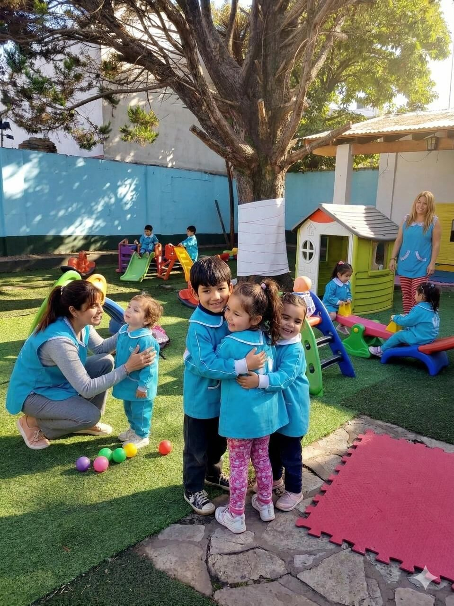
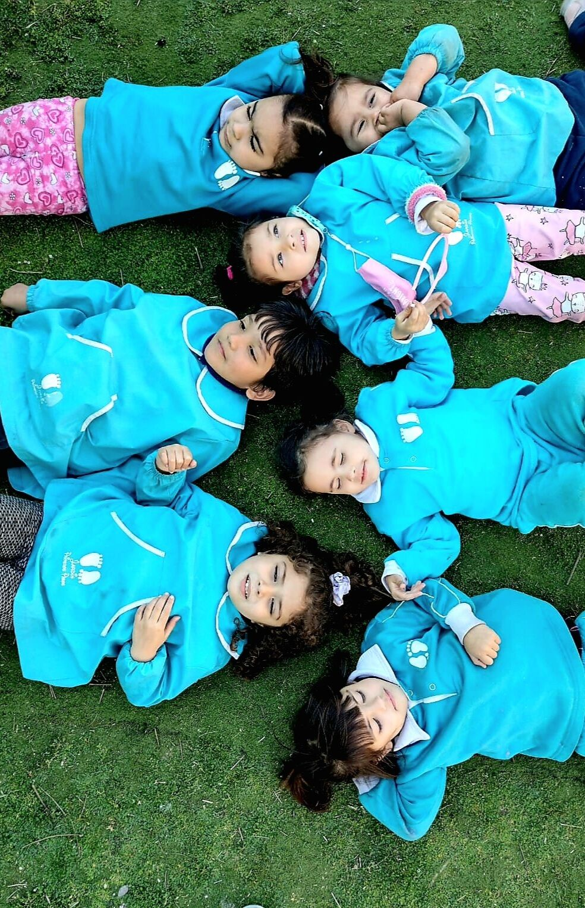
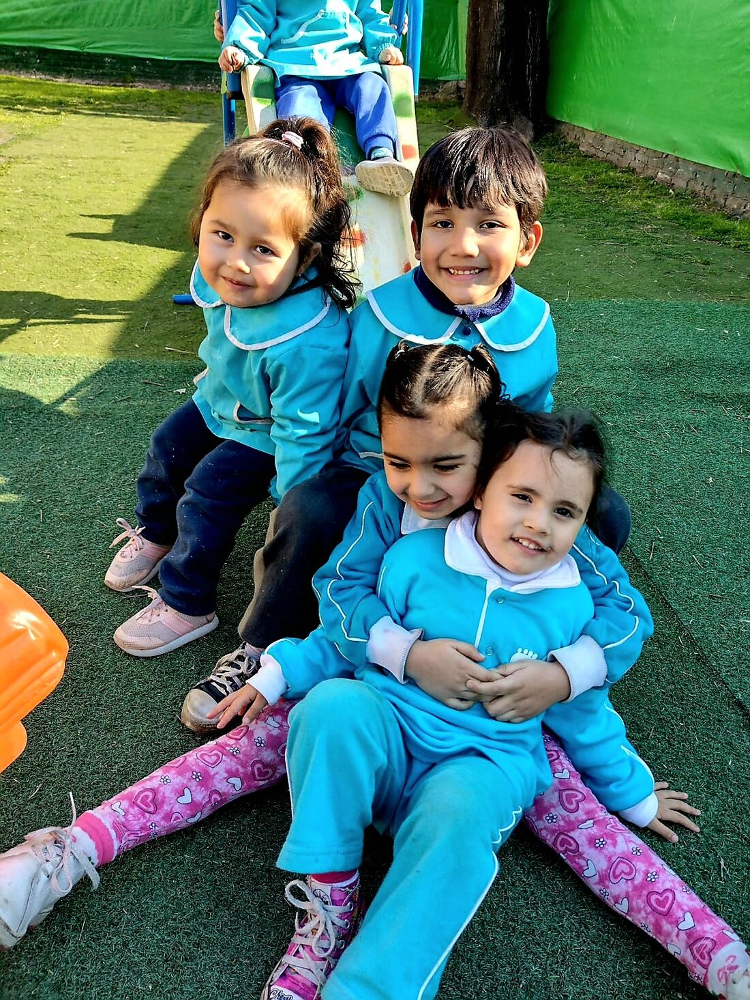
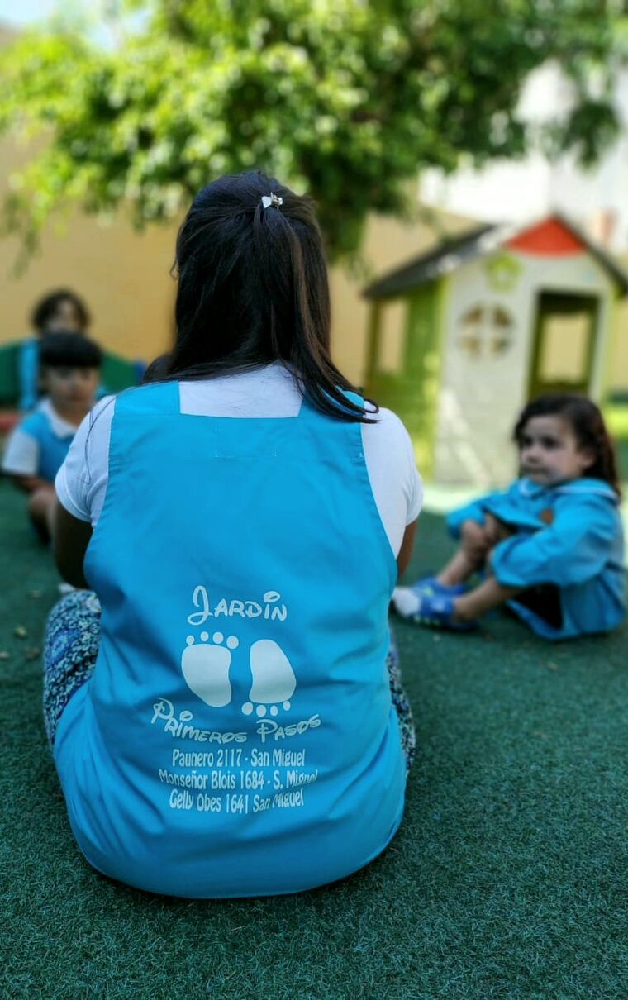
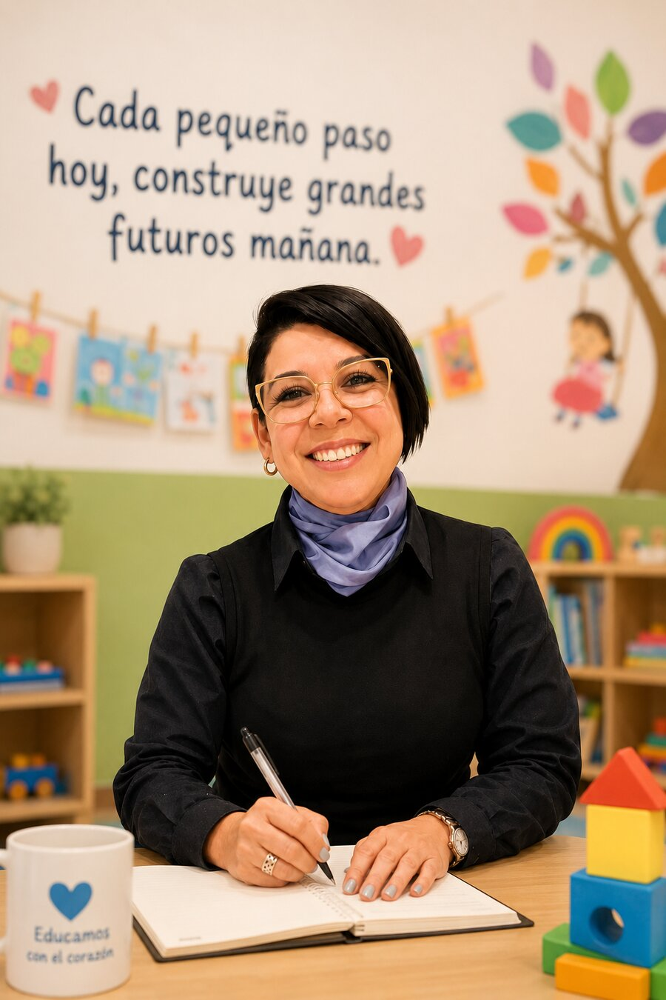
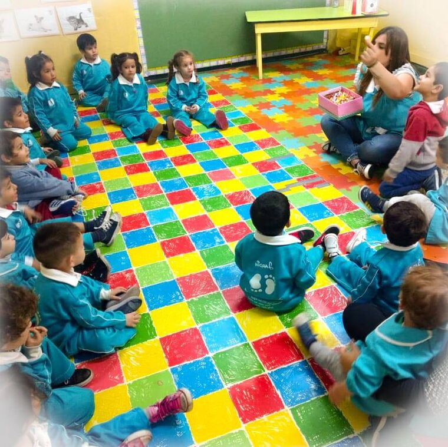

Bilingüismo Temprano
Inglés Lúdico
Primer contacto natural con el idioma a través de canciones, cuentos cortos y rimas cotidianas que entrenan su oído de forma espontánea.
Jardín Maternal en San Miguel · 18 meses a 4 años
Un espacio cálido y seguro donde tu peque aprende jugando con seños dedicadas, mientras vos trabajás con absoluta tranquilidad.
Una visita tranquila, sin compromiso ni apuros.

La experiencia cotidiana
El pasto bajo los pies, los juegos al aire libre y la mirada atenta de una seño que conoce los tiempos de cada niño.




Una palabra de Rosana
En estos más de 20 años recibiendo familias en San Miguel, aprendí algo fundamental: confiar el cuidado de tu hijo por primera vez genera mil dudas y la necesidad profunda de saber que va a estar tan cuidado como en casa.
Primeros Pasos no se explica en un folleto frío: se siente cuando caminás por el patio arbolado, escuchás las risas en las salitas y ves la mirada atenta de nuestras seños.
Te invito a venir a conocernos, tomar unos mates conmigo sin ningún apuro y traer a tu peque para que explore mientras conversamos.
Rosana
Directora · Primeros Pasos

Cuerpo, emoción, mente y juego: todo crece junto.
Descubrir haciendo, preguntando y volviendo a intentar.
Primeros amigos, acuerdos y el placer de pertenecer.
Pequeñas decisiones para sentirse cada día más capaz.
Palabras, relatos y conversaciones que abren mundo.
La seguridad de saber qué viene después, con ternura.
Raíces fuertes para dar el próximo paso con entusiasmo.
Lo recibimos con upa, sonrisa abierta y tiempo. El desapego de la mañana se acompaña con calma hasta que entra en confianza con su salita.
Nos sentamos en círculo en la salita, cantamos canciones cotidianas y abrimos la propuesta de juego guiado.
Momentos diarios dedicados a explorar palabras en inglés, ritmos musicales, la huerta o los primeros pasos con el software pedagógico PIPO.
Mucho aire libre en el pasto sintético seguro, trepar, correr y disfrutar de los juegos junto a sus compañeros.
Merienda compartida, higiene guiada y el reencuentro con la familia, con una sonrisa y mil anécdotas para contar.
Primer contacto natural con el idioma a través de canciones, cuentos cortos y rimas cotidianas que entrenan su oído de forma espontánea.
Instrumentos musicales, canciones y juegos sonoros para despertar la escucha atenta, el sentido del ritmo y la coordinación.
Manos en la tierra, siembra de plantines y contacto directo con la naturaleza para aprender el respeto por el entorno.
Primeros pasos digitales con software educativo interactivo especialmente diseñado para la estimulación lógica y cognitiva en la primera infancia.
Juegos de movimiento, telas y dinámicas espaciales que ayudan a afianzar el esquema corporal, el equilibrio y la confianza en sus movimientos.
✨ Inscripciones 2027 · San Miguel
Asegurá la vacante de tu hijo con matrícula bonificada reservando durante septiembre.
Matrícula habitual: $400.000
Septiembre · Inscripción 2027
Matrícula habitual: $400.000
Septiembre · Inscripción 2027
Acompañamiento cercano
Cada peque tiene sus propios tiempos. Así acompañamos los primeros días de adaptación.
«Lo más difícil era no saber cómo iba a estar. Desde el primer día el equipo nos fue contando cómo transcurría la mañana. Esa comunicación cercana nos dio la tranquilidad que necesitábamos para trabajar.»
«Teníamos la duda de si iba a comer bien lejos de casa. El equipo acompañó ese proceso con paciencia y amor, respetando sus tiempos. Fue descubriendo la autonomía a su propio ritmo.»
«Era muy tímido para los juegos en grupo. El equipo nunca lo apuró ni lo comparó. Lo fueron acompañando con paciencia, y con el tiempo fue ganando confianza en el patio con sus compañeros.»
Familias de San Miguel en Google
Palabras reales de mamás y papás que confiaron en Primeros Pasos.
«Su adaptación duró dos meses; siempre nos acompañaron con paciencia y contención. Logró entrar y salir contento e hizo grandes amigos.»
«Sale y entra re feliz todos los días. El tacto, la paciencia y el amor que manejan desde la directora hasta los auxiliares es increíble.»
«Elegimos el jardín para nuestra hija mayor y ahora lo volvemos a elegir para nuestra hija menor. Cero dudas.»
Para venir a conocernos
Elegí la ubicación más cómoda para la rutina de tu familia en San Miguel.
Espacio cálido, patio arbolado y salitas acondicionadas para niños de 18 meses a 4 años.
Ubicación accesible, salitas luminosas y patio de juegos para una experiencia segura y cercana.
Preguntas frecuentes
Si tenés alguna duda puntual, escribinos. Rosana o su equipo te responden con gusto.
Hacer una consulta por WhatsAppRecibimos niños desde los 18 meses hasta los 4 años inclusive, divididos en salitas adaptadas a su etapa madurativa y motriz.
La adaptación es progresiva y respetuosa de los tiempos individuales de cada peque. Acompañamos el proceso junto a la familia, sin apuros ni comparaciones.
¡Sí! Te invitamos a venir con tu hijo para que recorra el patio, conozca a las seños y descubra el espacio mientras charlamos sobre el jardín.
Reservando tu vacante antes del 30/09/2026, accedés a la matrícula bonificada para el ciclo 2027: Sala de 3 con 80% de bonificación ($80.000) y Sala de 4 con 85% de bonificación ($60.000) sobre el valor habitual de $400.000.
Sí. Contamos con dos sedes en San Miguel: Paunero 2117 y Monseñor Blois 1684. Podés elegir la que mejor se adapte a la rutina de tu familia. Escribinos y te orientamos.
Al ser una institución de gestión privada con equipo docente propio y permanente, garantizamos el ciclo lectivo continuo sin interrupciones gremiales, brindando previsibilidad a las familias trabajadoras.
Su primera hermosa experiencia empieza acá
Vení a conocer Primeros Pasos con tu hijo. Traelo a recorrer el patio, jugar un ratito y sentir la calidez del equipo. Muchas veces, son ellos mismos los que eligen quedarse.
Te responde Rosana o nuestro equipo de seños. Cercano, sereno y a tu ritmo.